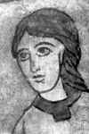
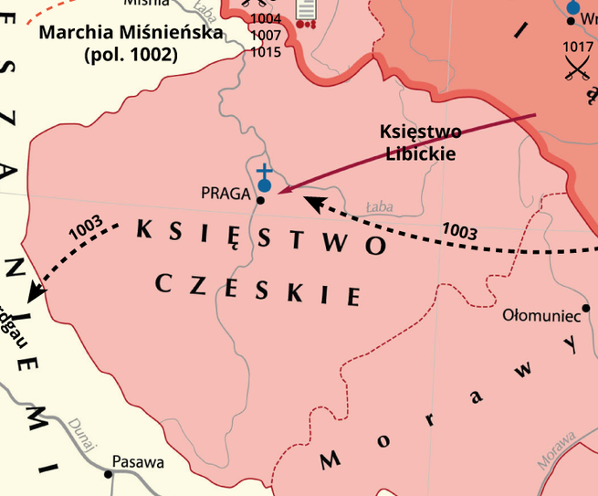

Historia przejęcia Czech
W roku 999 zmarł czeski książę Bolesław II Pobożny, pozostawiając po sobie trzech synów: Bolesława, Jaromira i Oldrzycha. Z uwagi na swój najstarszy wiek, Bolesław został wyznaczony na następcę po zmarłym ojcu. Jednakże rządy Bolesława III Rudawego nie były udane. Szybko popadł on w konflikty z braćmi - wykastrował Jaromira i przepędził Oldrzycha z kraju, a wcześniej próbował go zamordować w łaźni. W ten sposób dążył do umocnienia swojej władzy i pozbycia się potencjalnych rywali. Dodatkowo Rudawy popadł w konflikt z biskupem praskim Thiedagą, co tylko pogorszyło jego reputację i nie przysporzyło mu zwolenników.
Fatalne w skutkach rządy Bolesława III
Okrutne rządy Bolesława III wywołały bunt społeczny, który doprowadził do wygnania go z Czech, a na jego miejsce wstąpił Włodziwoj. Po przepędzeniu z kraju, Bolesław znalazł schronienie na dworze Chrobrego. Polski książę był spokrewniony z nim jako syn ciotki, Dobrawy, co sprawiło, że mógł liczyć na życzliwość Chrobrego. Włodziwoj mógł zdawać sobie z tego sprawę, dlatego udał się do Ratyzbony, gdzie złożył hołd lenny niemieckiemu królowi Henrykowi II Świętemu. Liczył na to, że jako lennik niemiecki będzie chroniony przed ewentualnymi ambicjami Chrobrego. Jednak jego panowanie zostało nagle zakończone przez śmierć w styczniu 1003 roku. 
Fresk przedstawiający podobiznę Bolesława III Rudego.
Autor nieznany, Znojmo - Czechy.
Podstęp Polskiego władcy
Po śmierci Włodziwoja, Czesi znaleźli się bez władcy, co skłoniło ich
do poszukiwania następcy dla zmarłego księcia. Zwrócili się wtedy do
braci Bolesława III, którzy oczywiście mieli prawa do czeskiego tronu.
W tym czasie Chrobry dostrzegł idealną okazję, aby zaangażować się w
sprawy Czech. Pomimo tej okazji, nie zawładnął władzą dla siebie, ale
osadził na tronie w Pradze Rudawego.
Prawdopodobnie Chrobry
zdawał sobie sprawę, że panowanie Bolesława III znowu będzie
katastrofą, a to mogło stworzyć dogodne warunki do już samodzielnego
przejęcia władzy nad Wełtawą przez polskiego księcia. Rudy nie zawiódł
tych oczekiwań iponownie zaprowadził krwawą tyranię. Zaprosił swoich
przeciwników na zamek, po czym ich po prostu wyrżnął. To oczywiście
ponownie doprowadziło do buntu przeciwko Bolesławowi III. Czesi
skrajnie niezadowoleni z postępowania tyrana, zwrócili się do
Chrobrego błagając go o wybawienie.
Polski książę tylko na to czekał. Zaprosił Rudego na spotkanie
do Krakowa, podczas którego oślepił go i wygnał. Aczkolwiek jedna z
teorii mówi o tym, że Rudy do końca swych dni był więziony na Wawelu.
Po uregulowaniu sprawy z Bolesławem III, Chrobry wyruszył do Pragi,
gdzie prawdopodobnie w marcu 1003 roku został uznany za władcę.
Czy panowanie Bolesława Chrobrego było legalne?
W sprawie legalności panowania Chrobrego toczą się spory między historykami, czy było ono legalne, czy jedynie okupacją Czech. Zasadniczo polscy historycy nie kwestionują prawnych podstaw rządów Chrobrego, podczas gdy czescy historycy nazywają je uzurpacją. Niezależnie od tych dyskusji historycznych, należy zauważyć, że przejęcie władzy przez polskiego księcia było w tamtym okresie całkowicie normalne. Ponadto sami Czesi obwołali go swoim władcą, co powinno zakończyć debatę na temat legalności jego panowania. Dodatkowo, matka Chrobrego była Czeszką z dynastii Przemyślidów, co również przemawiało na korzyść jego pozycji. Formalnie, Chrobry, prawdopodobnie zgodnie z czeskim zwyczajem, zasiadł na tronie w skromnym ubraniu i chodakach, symbolizujących legendarnego Przemysła, dopiero później przywdziewając okazały strój koronacyjny.
Na mapie
Czechy to kraj leżący w Europie Środkowej, do dziś graniczący z Polską.
Ziemie czeskie na mapie.